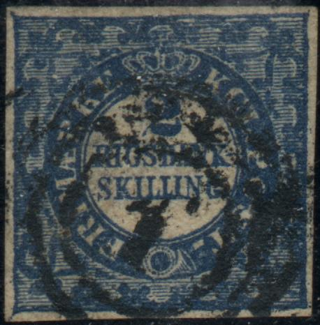
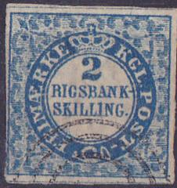
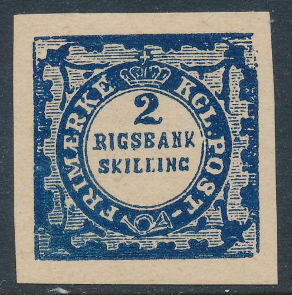

Return To Catalogue - Denmark 1851-1863 - Denmark 1882-1920 - Miscellaneous - Danish West Indies - Bypost (local post)
Curreny 96 Skilling = 1 Rigsbankdaler, after 1875 100 Øre = 1 Krone
Capital Kopenhagen
Note: on my website many of the
pictures can not be seen! They are of course present in the
catalogue;
contact me if you want to purchase it.
2 R.B.S. blue
These stamps have a wavy yellow or brown underprint.
Value of the stamps |
|||
vc = very common c = common * = not so common ** = uncommon |
*** = very uncommon R = rare RR = very rare RRR = extremely rare |
||
| Value | Unused | Used | Remarks |
| 2 R.B.S. | RR | RR | |

The watermark 'Small Crown' seen from the backside of the stamp
Reprints were made in 1886 and 1901 (both no watermark). If anybody posesses information about these reprints, please contact me! A book concerning the reprints exists: 'Reprints of the stamps of Denmark and Danish West Indies' by R.King-Farlow and J.Schmidt-Andersen (I haven't seen this book myself).

1885 reprint


I've been told that these are also reprints

Reprints with "HAFNIA 76 NYTRYK" at the back.
Forgeries were already described in 'The Stamp Collector's Magazine' in 1864 (1st October, page 155).
Forgery:
The stamps should have a watermark (small crown). The above forgery doesn't have this. The cross on the crown is very clearly visible (in contrast to the genuine stamps). There is no dot behind "POST" in this forgery, the posthorn is thin. The letters are all different from the genuine stamp and there is no "-" behind "POST". This forgery is also described in 'The Spud Papers'. Also note that the background patterns are different from the genuine stamp (especially in the bottom left corner). I've been told that this could be a forgery made by the Spiro brothers. Though the cancels are quite different from the usual 'Spiro' products. The only cancels found on these forgeries are numeral cancels with "107", "108", "112" or "119" in the center (none of them, except "119", were used on the genuine stamps). A blue frameline can sometimes be observed around the stamp.
Other forgeries:


Forgery with the "." behind "SKILLING" too
far from the nearby circle. I've only seen this forgery with a
numeral "1" cancel. The "-" behind
"POST" is placed too low. The third stamp was sold as
genuine on Ebay for 305 US$ in October 2017.


A whole sheet of these forgeries, note the imprinted 'wateermark'
(images obtained from Erik Madsen)

Another forgery

Primitive forgery with the word "SKILLING" too small
(and no dot behind this word).

Most likely a reprint from the book 'DENMARK 2 RIGSBANK-SKILLING
1851-1852' by Trelleborg (1980). Apparently this book contains 48
blue and 200 black rerprints.
Reprints made in 1951 for the International Frimaerke Udstilling
in Kopenhagen.


Cut from this 1951 sheetlet, on the back of this reprint is
written "INT. FRIMAERKE UDST. KOBENHAVN 1951"


Other forgeries or reprints.
For stamps of Denmark 1851-1863, click here.
Examples of Denmark 1851-1863 stamps
Forfalskning = forgery
Nytryck = reprint


{kind=link}
{kind=link}
{kind=link}
{kind=link}